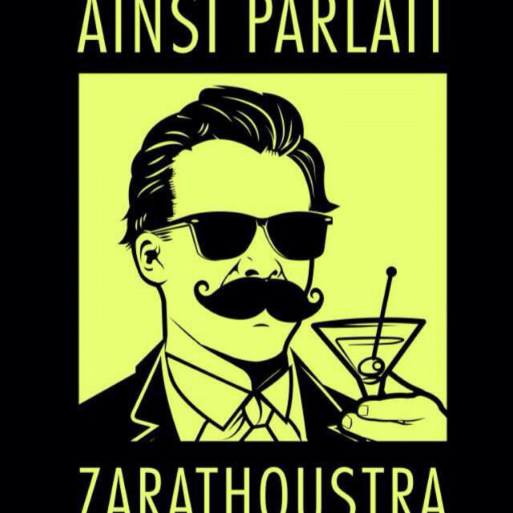
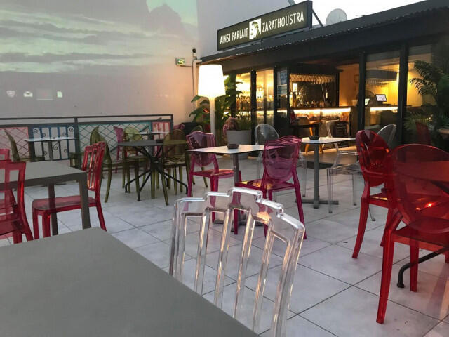
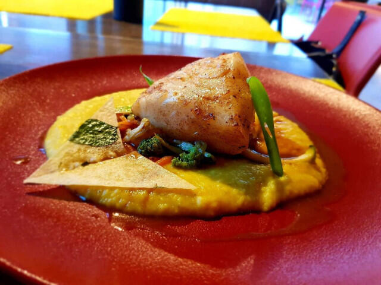
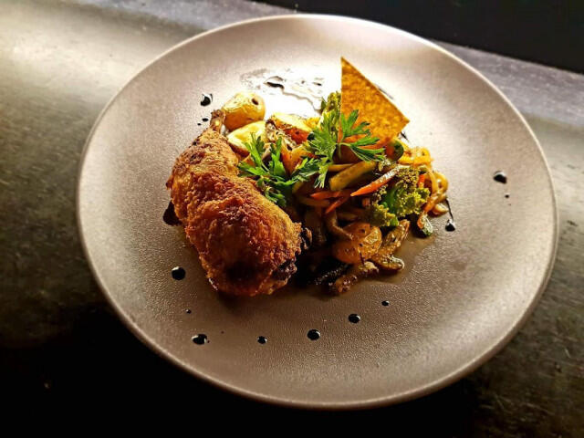

Bar à vins · Cocktails · Champagne · Saint-Denis
Au cœur du Carré Cathédrale, une terrasse, des bulles, des tapas et des soirées stand-up pour rire ensemble.

La maison
Tenu par Paola et Lilian, Ainsi Parlait Zarathoustra réunit les amateurs de vin, de cocktails et de champagne dans la ruelle Édouard, au Carré Cathédrale, le quartier où l’on sort à Saint-Denis.
Les bulles pétillent, les tapas arrivent sur la terrasse, et un groupe local vient animer la soirée. Le nom rend hommage au poème philosophique de Friedrich Nietzsche.
« Le Zarathoustra est un restaurant, bar, whisky & champagne. »
En images



Les soirées
Des soirées d’humour avec Le Carré du Rire (Galerie Artefact).
Un groupe local qui fait vibrer la terrasse, une coupe à la main.
Vin, cocktails et champagne, avec une belle assiette de tapas.
13 ruelle Édouard
Carré Cathédrale
97400 Saint-Denis
Du mardi au samedi
de 17h à minuit